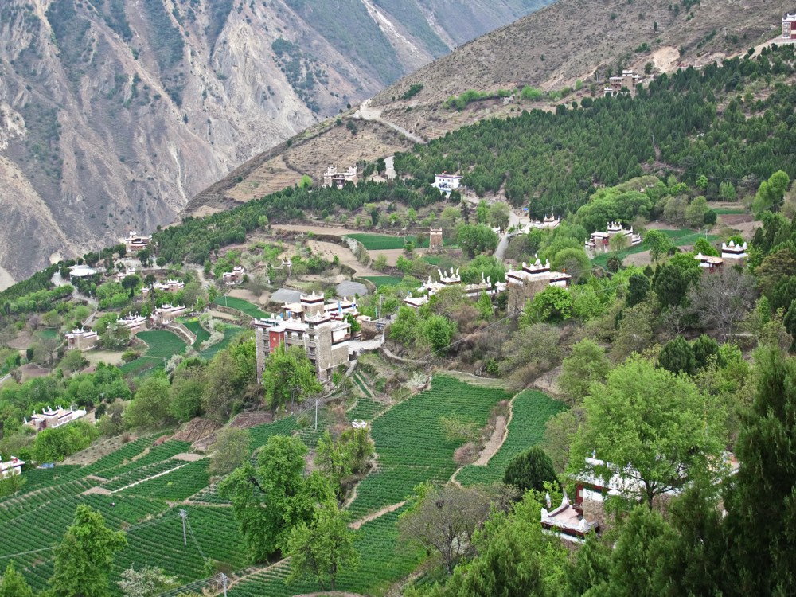
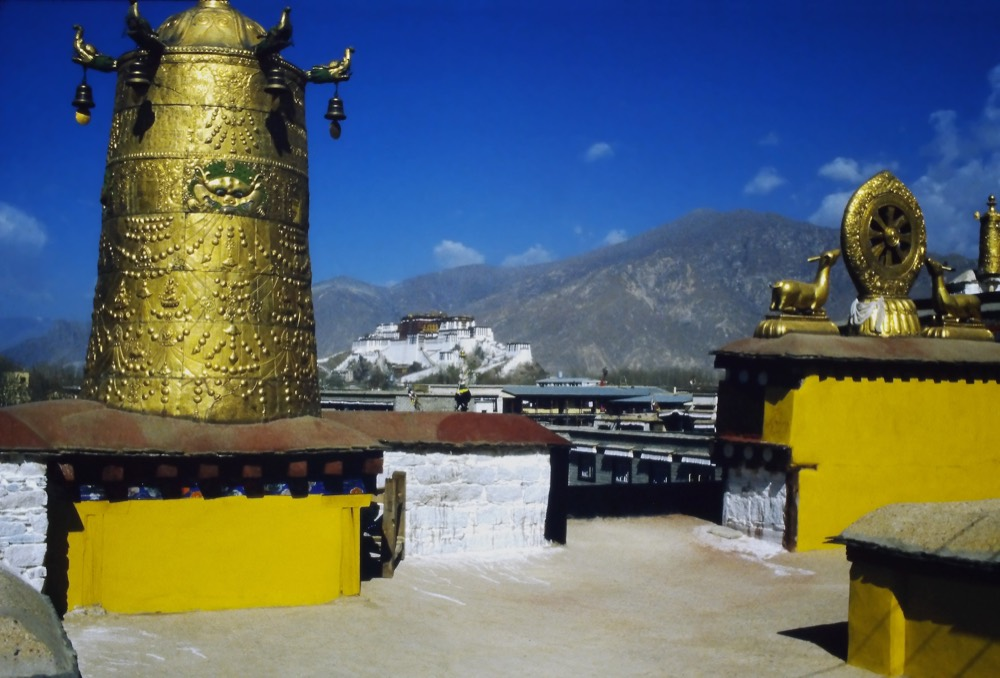

Chengdu to Lhasa on the G317
Three weeks one way on the quieter northern Sichuan–Tibet road: the stone towers of Danba, the painted houses of Daofu, the Dege printing house, Chamdo and the nomad grassland of Nagqu, ending with four nights in Lhasa and a flight home.
- Length
- 20 days
- Distance
- about 2,200 km
- Best time
- September
- Per person, excl. flights
- from CNY 18,420
Researched November 2026 for September 2027. Permits, closures, hours and prices change, so check everything with your agency before you go. Drive times are realistic estimates (slower than route engines); confirm in Amap.
Why the G317
The cultural road into Tibet: Kham villages, great monasteries and the Dege Parkhang, still printing scriptures from wooden blocks, then the high nomad plateau and down into Lhasa. The climb is gradual, no drive is over about 3 hours, and it is far quieter than G318.
September: the best month for the northern road: the rains are ending, the grassland is still green-gold, and nights on the plateau are cold but not yet bitter (around freezing at Nagqu). The Dege Parkhang is printing. Daylight is about 12½ hours; no driving after dark. From late October snow and ice reach the 5,000 m passes.
Best time to go: September is best: the rains are ending, the grassland is still green-gold, plateau nights are cold but not yet bitter, and the Dege Parkhang is printing. Late May to June is a good second (green, but colder at night and rain starting). Avoid July–August (rain and rockfall), late October onwards (snow and ice on the 5,000 m passes, bitter nights at Nagqu, and the Parkhang may close), and the winter months.
The route: Chengdu → Danba → Daofu → Ganzi → Dege → Jomda → Chamdo → Dêngqên → Sog → Nagqu → Lhasa, then fly home to Chengdu or Shanghai. 20 days, about 2,200 km, no drive over about 3 hours, and four nights in Lhasa.
Highlights
- Danba’s Jiaju village and Suopo stone towers
- Daofu’s painted houses and the barley valleys of Luhuo and Ganzi
- Yilhun Lha-tso lake and the Que’er Shan tunnel under a 5,050 m pass
- The Dege Parkhang, still printing from wooden blocks
- Chamdo, Riwoqê’s great hall and the nomad grassland of the northern plateau
- Lhasa: the Potala, the Jokhang and the Barkhor, Norbulingka and the Sera debates
Good to know
- Foreign visitors cannot travel independently in the Tibet Autonomous Region: a licensed Tibet agency must arrange the Tibet Travel Permit and any other permits for the exact route, and a licensed guide stays with the group throughout. Apply at least a month ahead. Get the agency to confirm in writing that entry at the Gangtuo bridge and the route through Chamdo and Nagqu are permitted for foreigners on your dates: reports on Chamdo conflict.
- Cars: agencies running foreigner self-drive trips use their own Tibet-registered cars with a temporary licence for the driver; a rental car from Chengdu may not be accepted. With a guide on board, plan two cars for six people and their luggage.
- Altitude is the main risk. Anyone older, or with heart or lung conditions, should see a doctor before booking. The climb is gradual, but you spend 11 nights in a row at 3,270–4,500 m (Ganzi to Nagqu), with Nagqu (4,500 m, Day 15) the highest; book oxygen rooms and carry a pulse oximeter. Chamdo has the only major hospital before Lhasa.
- Check that travel insurance covers your age at altitudes up to about 5,100 m on a road trip, and an evacuation. Many policies stop at 3,000–4,000 m or at age 70–80.
- Hotels inside the TAR must be licensed to take foreign guests; the agency books them to match the permit. Ask for oxygen-supplied rooms above 3,000 m.
- Closed to foreign visitors in 2026: Laigu and Midui glaciers (closed to everyone), the Yarlung Tsangpo Grand Canyon, Nanyi valley and Larung Gar. Check again a month before you go.
- Potala tickets are released 10 days ahead and the palace closes on Mondays (except public holidays): pick the start day so your Potala day is not a Monday. The agency books it.
- Petrol stations are far apart on G317: fill up whenever you can, especially at Chamdo and Jomda. Mobile signal drops out for long stretches.
- Getting home: Lhasa to Chengdu is about 2 hours with many flights a day; to Shanghai about 4–6 hours direct (few flights a week) or one stop via Chengdu or Xi’an.
Two ways to do it
💰 Best value
- Stay: the value pick in each city, 4-star or a platform-rated equivalent (see Where to stay).
- Eat: local specialities at well-rated everyday places.
- About CNY 18,420–30,080 per person for 20 days, including the agency cars, guide and permits, excluding flights to Chengdu and home from Lhasa.
✨ Best experience
- Stay: the St. Regis or Shangri-La in Lhasa (oxygen in the rooms), the best-rated hotels with oxygen supply on the high nights, and characterful Tibetan-style hotels in Danba and Dege (see Where to stay).
- Eat: a proper Sichuan hotpot in Chengdu and the best Tibetan and Nepali restaurants in Lhasa.
- About CNY 24,240–38,310 per person.
Same route and days for both; only hotels and meals change.
Route map
● numbered: overnight stops in order ● stop on a drive day (lunch or sight). Tap a point for its days. Lines follow roads from OpenStreetMap routing and are approximate.
Itinerary: 20 days, 19 nights
Each driving day is either one drive (leave early, arrive for a late lunch, then sightseeing only) or two drives with a lunch stop in between. Short hops to sights are not counted.
Morning
Arrive and check in; an easy first day at 500 m.
Lunch
Lunch: Sichuan classics (mapo tofu, twice-cooked pork); ask for mild.
Afternoon
Tea in People’s Park and a stroll through Kuanzhai Xiangzi.
Morning
Giant Panda Base at opening, when the pandas are active (flat paths and shuttle carts).
Lunch
Lunch near the base or downtown.
Afternoon
Sichuan Museum or Wuhou Shrine and Jinli. Buy pulse oximeters and portable oxygen for the road; meet the agency for the briefing.
Morning
🚗 Chengdu → Rilong · 199 km · 3h
Leave about 8:00 through Wolong and the Balang tunnel (check the G350 works schedule the week before).
Lunch
Lunch in Rilong with the Siguniang peaks.
Afternoon
🚗 Rilong → Danba · 114 km · 2h45
Down the Xiaojin valley to Danba (1,900 m), a gentle first step up from Chengdu.
Morning
Jiaju Tibetan village from the viewing platform, reached by car (the village lanes have many steps).
Lunch
Lunch in Danba.
Afternoon
The Suopo stone watchtowers from the road; rest.
Morning
🚗 Danba → Bamei · 91 km · 2h
Leave about 9:00 up the Dadu valley.
Lunch
Lunch in Bamei, among the granite hills of the Huiyuan valley.
Afternoon
🚗 Bamei → Daofu · 79 km · 1h30
Daofu (about 2,980 m) and its painted timber houses.
Morning
🚗 Daofu → Luhuo · 70 km · 1h15
Leave about 9:30.
Lunch
Lunch in Luhuo.
Afternoon
🚗 Luhuo → Ganzi · 96 km · 1h45
Up the valley of barley fields and Tibetan houses to Ganzi (3,390 m).
Morning
A rest day to adapt to 3,390 m before the high road; laundry.
Lunch
Lunch in town.
Afternoon
Ganzi Monastery above the town, by car, if energy allows.
Morning
🚗 Ganzi → Manigange · 93 km · 1h45
Leave about 9:00.
Lunch
Lunch in Manigange, with Yilhun Lha-tso (Xinlu Hai) lake a few minutes away: an easy shore path.
Afternoon
🚗 Manigange → Dege · 91 km · 1h45
Through the Que’er Shan tunnel, which replaced a 5,050 m pass, down to Dege (3,270 m).
Morning
The Dege Parkhang sutra printing house (09:00–11:30; steep, dark stairs inside: the ground floor is enough), then Gonchen Monastery next door.
Lunch
Lunch in Dege.
Afternoon
Rest.
Morning
🚗 Dege → Jomda · 93 km · 2h
Leave about 9:00 and cross the Jinsha River into the Tibet Autonomous Region; the guide meets you at the bridge and handles the checkpoint.
Lunch
Late lunch in Jomda.
Afternoon
Rest; fill up with fuel here.
Morning
🚗 Jomda → Tuoba · 117 km · 2h15
Leave about 8:30. The road is rough in places.
Lunch
A simple roadside lunch around Tuoba (bring snacks).
Afternoon
🚗 Tuoba → Chamdo · 113 km · 2h15
Down to Chamdo (3,270 m), the biggest town of eastern Tibet.
Morning
Rest and laundry, or the spare day for delays behind you.
Lunch
Lunch in town.
Afternoon
Qamdo Jampaling Monastery above the river confluence, if energy allows. Fill up before leaving tomorrow.
Morning
🚗 Chamdo → Riwoqê · 90 km · 1h45
Leave about 9:00.
Lunch
Lunch in Riwoqê, with the great Yangkang assembly hall of the old monastery. (Tsedru monastery is a rough climb to about 4,800 m: not on this plan.)
Afternoon
🚗 Riwoqê → Dêngqên · 145 km · 2h45
On to Dêngqên (about 3,830 m).
Morning
🚗 Dêngqên → Rongbu · 127 km · 2h15
Leave about 8:30 over the high passes.
Lunch
A simple lunch in Rongbu.
Afternoon
🚗 Rongbu → Sog · 120 km · 2h30
Through Baqên to Sog (about 3,990 m).
Morning
🚗 Sog → Xiaqu · 130 km · 2h30
Leave about 9:00 west across the nomad grassland.
Lunch
A simple lunch in Xiaqu.
Afternoon
🚗 Xiaqu → Nagqu · 101 km · 1h45
Nagqu (4,500 m), the highest night of the trip: oxygen room, no activity, early night. Tomorrow you go down.
Morning
🚗 Nagqu → Damxung · 166 km · 2h
Leave about 9:00 on the Lhasa–Nagqu expressway past the Nyenchen Tanglha range.
Lunch
Lunch in Damxung (about 4,200 m).
Afternoon
🚗 Damxung → Lhasa · 163 km · 2h
Down to Lhasa (3,650 m). Rest at the hotel.
Morning
Jokhang Temple in the morning (book the day before), then a slow clockwise walk round the Barkhor with the pilgrims.
Lunch
Lunch near the Barkhor: thukpa, momos and sweet tea.
Afternoon
Rest. Evening view of the Potala from Potala Square.
Morning
The Potala on a timed ticket released 10 days ahead (closed Mondays, except public holidays). The main route climbs about 1,000 steps: go slowly. Easier option: the new Snow City route below the palace, which does not enter it.
Lunch
Lunch and a long rest.
Afternoon
An easy afternoon; a Nepali or Tibetan dinner.
Morning
Norbulingka, the Dalai Lamas’ summer palace gardens: flat and gentle.
Lunch
Lunch in town.
Afternoon
The monks’ debate at Sera Monastery (most afternoons except Sundays), or rest; a last evening on the Barkhor.
Morning
Transfer to Lhasa Gonggar airport (about 1 h). Fly to Chengdu (about 2 h, many flights a day) or Shanghai (about 4–6 h direct, few flights a week; or one stop via Chengdu or Xi’an).
Lunch
Lunch at the airport or on the plane.
Afternoon
Driving, permits & altitude
- Inside the Tibet Autonomous Region (from the Gangtuo bridge near Dege onwards) foreign visitors travel only on an agency-arranged itinerary with a licensed guide. The guide carries the permits and handles the checkpoints, which come several times a day.
- Self-drive for foreigners means the agency’s own Tibet-registered car with a temporary Chinese licence for the driver and the guide on board. Get it in writing: the car model, insurance, whether a support car is required, and what happens in Sichuan before and after the TAR.
- Speed in the TAR is enforced by section cameras that time you between points (common on G318 and spreading on G317); plan at about 40 km/h and expect fines of about CNY 1,200 for speeding. Travel times in this guide already allow for it.
- Roads: the Que’er Shan tunnel (2017) replaces a 5,050 m pass, and the last day into Lhasa is on the toll-free expressway. You still cross several passes of 4,400–5,000 m between Dêngqên and Nagqu by day: stop for photos only. The bridge on G317 near Maerkang collapsed in late 2025, so this route enters via Danba.
- Fuel: run on petrol and treat charging as a bonus. Small towns often lack 95-octane; Chamdo and Jomda are the reliable fill-ups on the northern road.
- Altitude: carry a pulse oximeter and portable oxygen; ask your doctor about acetazolamide before you go. Anyone with a resting oxygen level persistently below about 85%, or a headache that will not go, vomiting, breathlessness at rest or confusion, should go down: do not try to push on with oxygen.
- Hospitals: the best are in Lhasa (the Tibet Autonomous Region People’s Hospital) and Chamdo, with the Ganzi prefecture hospital in Kangding off-route; elsewhere there are county hospitals. Help in an emergency is mostly by road; plan to go down, not to wait for a helicopter. Emergency numbers: police 110, ambulance 120.
- Phone and payment: get a Chinese +86 SIM and set up Alipay and WeChat Pay before you go; carry cash for small towns, where signal is patchy. Download offline maps.
- Total driving: about 2,200 km.
Agency package for the group (estimate, before quotes) Two agency cars for 20 days (one self-drive, about CNY 1,000–1,800 a day; one with a driver, about CNY 1,500–2,500 a day), plus 4–5 days for the cars to return empty to Chengdu, a licensed guide for about 11 days in the TAR (CNY 300–900 a day), permits (CNY 250–400 per person), food and lodging for the driver and guide, and fuel and tolls. Market ranges seen in 2026; get three written quotes.
| Group | Per person (6) | |
|---|---|---|
| Agency cars, driver, guide, permits, fuel and tolls | CNY 74,800–133,900 | CNY 12,470–22,320 |
Top sights





Chengdu
- Chengdu Research Base of Giant Panda Breeding: Pandas in wooded enclosures at ~500 m; the park is large and hilly, so use the electric carts and go at opening (07:30) when pandas are active. 07:30–18:00 (morning entry 07:30–12:00, afternoon 12:00–17:00) · 55 CNY · Real-name timed booking on the official WeChat/site or Trip.com with passport; 60+ reported free (check whether this applies to passports)
- Wuhou Shrine and Jinli: Temple to Zhuge Liang and the Three Kingdoms; flat gardens with a few thresholds, about 1 km of walking; Jinli lane next door is free. 09:00–19:00 (last entry 18:00) · 50 CNY · Official site/WeChat only; passport holders scan the QR at the main gate; the museum says it has no authorised resellers
Siguniang / Rilong
- Shuangqiao Gou valley (Siguniang) UNESCO: The easiest Siguniang valley: the bus drives ~30 km up to ~3,800 m with stops on flat boardwalks, so older visitors barely walk. Part of the Sichuan Giant Panda Sanctuaries UNESCO site. 08:00–17:30 (last entry 15:00) · 150 incl. bus (seniors 70; 65+ entry free) CNY · Siguniang WeChat/Trip.com with passport; check whether the 65+ waiver applies to passports
Danba
- Jiaju Tibetan village: Hillside of painted Gyalrong stone houses at ~2,000 m; drive to the viewing platform at the top, the lanes between houses are steep. ? · 50 (from, Trip.com) CNY · Trip.com or gate (passport)
- Suopo watchtowers: Dozens of ancient stone towers across the Dadu river; best seen from the roadside viewpoint, no walking needed. all day · ? (viewpoint free) CNY · None
Ganzi
- Ganzi monastery: Large Gelug monastery on the slope above Ganzi town (~3,400 m) with views of the Chola range; drive up, then steps. ? · ? CNY · Not verified
Yilhun Lha-tso
- Yilhun Lha-tso (Xinlu Hai): Glacier-fed lake at ~4,040 m by G317 near Manigango, 4A since Feb 2025; boardwalk along the shore, keep it to the first few hundred metres. 08:30–18:30 · ? CNY · Gate; price not found
Dege
- Dege Parkhang (Sutra Printing House): 18th-century printing house with ~300,000 wood blocks; watch hand printing (season runs to about the 20th day of the 9th Tibetan month, so early October should be in season). Steep wooden stairs and ladders to the upper floors and roof; older visitors can watch on the ground floor. Dark, no flames, photo limits. 09:00–11:30, 14:30–16:30 · 50 (older report) CNY · Gate ticket; no booking found
- Gonchen monastery: Sakya monastery next to the Parkhang; level courtyard, a few steps into the halls. ? · ? (reported free) CNY · Not verified
Chamdo
- Qamdo Jampaling monastery: Chamdo's main Gelug monastery on the hill between the two rivers (~3,250 m); drive up; go in the morning as some halls close after 16:00. all day; some halls close ~16:00 · free · None; guide accompanies
- Karuo Neolithic site: One of Tibet's three key prehistoric sites (5,000 years) at Jiaka village; open ground, short level walk. ? · ? CNY · Not verified; ask the guide
Riwoqê
- Riwoqê Tsuglakhang (Chakyema hall): Huge 13th-century assembly hall of Yangkong monastery, ~3,800 m; single level, flat approach. ? · ? CNY · Ask the guide
Sog
- Sog Tsanden monastery: Hilltop monastery nicknamed the "little Potala" at ~3,950 m; drive up, then stairs between halls. 10:00–18:30 · free (reported) CNY · Ask the guide
Lhasa
- Potala Palace (main route) UNESCO: Dalai Lamas' winter palace. Hard for older visitors: you climb about 1,000 steps (13 storeys) from ~3,650 m with steep wooden ladders inside, a 1.5–2 hour visit with timed entry. Easier: the Snow City route at the foot (below), plus the view from Potala Square or Chakpori. 09:00–15:40 last entry (early May–late October); 09:30–15:20 in winter · closed Mon (周一), except public holidays · 200 (peak, route 1); route 2: 100 CNY · Real-name, ~7–10 days ahead on the official WeChat mini program only; one booking per ID per 7 days; no changes; foreigners: the TAR agency books with passport scans; carry the same passport. Pick a day that is not a Monday.
- Potala Snow City (Shöl) route UNESCO: Opened 20 Sep 2026: the old town at the Potala's foot (Treasure Museum, Shöl prison, mint, noble houses), entered by the east and south gates; level ground, no climb into the palace. The senior alternative. 09:00–15:40 last entry (peak) · closed Mon (周一), except public holidays (assumed same as palace) · 25 (peak early May–late October) CNY · Separate ticket on the same official WeChat mini program; foreigners: the TAR agency books with passport scans; carry the same passport; tel 0891-6332558
- Jokhang Temple UNESCO: Tibet's holiest temple; mostly level, crowded dark chapels, a stair to the gilded roof (optional). About 1 hour. 08:30–17:30 (timed entry 08:30–13:30, afternoon untimed) · 85 CNY · Book 1 day ahead on the Jokhang mini program; foreigners: the TAR agency books with passport scans; carry the same passport
- Norbulingka UNESCO: Dalai Lamas' summer palace and park; flat but large (2–3 km if you walk it all), with a separate sightseeing cart. ~09:30–18:00 (winter hours; summer not found) · 60 (cart and zoo extra) CNY · Gate or agency; foreigners: the TAR agency books with passport scans; carry the same passport
- Sera Monastery debate: Monks debate in the courtyard 15:00–17:00, Mon–Sat (not Sunday); the courtyard is a gentle uphill 300–400 m from the gate at ~3,800 m, benches in the shade. ~09:00–17:00 · closed Debate not on Sun (周日无辩经) · 50 CNY · Gate ticket; foreigners: the TAR agency books with passport scans; carry the same passport
Exhibitions
- All museums on the route: No exhibitions for 2027 announced yet Checked November 2026: neither the Sichuan Museum nor the Tibet Museum has published a September–October 2027 programme. Jinsha is due to reopen on early May after renovation and may open new galleries; check its WeChat account in spring 2027. Chinese museums usually announce shows one to three months ahead.
- Museums publish autumn 2027 shows only a few weeks ahead. This section will be updated closer to the time.
Museums
| Museum | Hours | Closed | Entry |
|---|---|---|---|
| Sichuan Museum Chengdu | 09:00–17:00 (holiday hours to 18:30) | Mon (周一) | free Real-name booking on the Sichuan Museum WeChat service account; passport handling not confirmed |
| Jinsha Site Museum Chengdu | ? | Closed until 30 Apr 2027; Mon (周一) previously | ? (70 before closure, unverified) Check reopening rules in 2027 |
| Wuhou Shrine Museum Chengdu | 09:00–19:00 (last entry 18:00) | 50 Official site/WeChat; passport QR at main gate | |
| Chamdo Museum Chamdo | ? | ? | ? Ask the guide |
| Tibet Museum Lhasa | ~09:30–17:30 or 18:30 (sources differ) | Mon (周一), except holidays | free Free booking reported; foreigners: the TAR agency books with passport scans; carry the same passport. Closed Mon late September, so go late September |
Most Chinese museums close on Mondays and need a free real-name booking with your passport.
Where to eat
Lunch and dinner options for every stop. Badges show the rating and review count from the source named, mostly Ctrip / Trip.com (out of 5; 4.5+ with 150+ reviews is our bar). Dianping scores did not appear in search listings, and Dianping blocks automated access, so they are not used. Places below the bar are kept only where nothing better is on the route, and are marked. Read November 2026; prices are per person.
Chengdu
- Lunch: Chen Mapo Tofu (Qinghua Road) Trip.com 4.6 (below our 4.5 bar or few reviews): The original mapo tofu, twice-cooked pork, fish-fragrant aubergine; mild: ask for 不辣 tofu, steamed pork ribs. CNY 60–75
- Lunch: Panxinshi (Chunxi Road) Ctrip 4.5 · 115 reviews (below our 4.5 bar or few reviews): Century-old Chengdu deli: braised meats (卤菜), cold-dressed dishes, rice; much of it not spicy. CNY 70
- Lunch: Yi Laoma Tihua (People's Park flagship) Ctrip 4.4 · 437 reviews (below our 4.5 bar or few reviews): Pork-trotter and white-bean soup (not spicy, good for elders), Sichuan home dishes. CNY 55
- Lunch: Ye Po Po Bobo Chicken (Taikoo Li) Ctrip 4.9 · 491 reviews: Leshan skewers in chilli or green-pepper (藤椒) oil; light snack lunch. CNY 49
- Dinner: Houtang Hot Pot (Taikoo Li flagship) Ctrip 4.9 · 220 reviews: Beef-tallow hotpot: fresh tripe, duck intestine, beef; mild: order a yuanyang pot with a clear/mushroom half. CNY 112
- Dinner: Kuan Xiangzi No. 3 (Kuanzhai Alley) Ctrip 4.5 · 288 reviews: Modern Sichuan in a courtyard house; set menus balance spicy and mild dishes. CNY 298
- Dinner: Mawangzi (Sichuan bistro) Ctrip 4.4 · 358 reviews (below our 4.5 bar or few reviews): Classic Sichuan home dishes done carefully: kung pao chicken, twice-cooked pork, mild soups. CNY 117
- Dinner: Shang Palace, Shangri-La Chengdu Ctrip 4.7 · 70 reviews (below our 4.5 bar or few reviews): Cantonese and refined Sichuan; the safe mild choice for the two elders. CNY 216
- Dinner: Yu Zhi Lan (below our 4.5 bar or few reviews): Chef Lan Guijun's tasting menu, light refined Sichuan; famous fine noodles.
- Dessert: He Ji Dan Hong Gao (Wenmiao West Street) Trip.com 4.9 · 45 reviews (below our 4.5 bar or few reviews): Chengdu egg pancakes with sweet fillings. CNY 15–25
Rilong (Siguniang)
- Lunch: Abalang Tibetan garden restaurant Ctrip 4.6 · 11 reviews (below our 4.5 bar or few reviews): Yak soup pot, wild mushrooms with bacon, barley-yoghurt cake; mild. CNY 75
- Lunch: Shiweixuan Sichuan Ctrip 4.0 · 9 reviews (below our 4.5 bar or few reviews): Beef noodles, potato with bacon, braised yak, matsutake chicken soup. CNY 38
Danba
- Lunch: Zheng Jie private kitchen Ctrip 4.9 · 7 reviews (below our 4.5 bar or few reviews): Home dishes: dressed fish, dressed chicken, braised chicken feet. CNY 43
- Dinner: Jisuo cliff restaurant, Guangyulin Hotel Ctrip 4.2 · 5 reviews (below our 4.5 bar or few reviews): Hand-held yak, highland cured-meat platter; valley views. CNY 97
Bamei
- Lunch: Aluo Tibetan Ctrip 4.6 · 5 reviews (below our 4.5 bar or few reviews): Stir-fried beef, dry-pot yak, butter tea. CNY 67
- Lunch: Restaurant, Qianning Manor (Bamei) Ctrip 5.0 · 1 reviews (below our 4.5 bar or few reviews): Braised yak, dressed beef, firewood chicken. CNY 58
Daofu
- Lunch: Huangji farmhouse kitchen Ctrip 4.3 · 6 reviews (below our 4.5 bar or few reviews): Sweet-and-sour ribs, sour-cabbage fish, dry-fried intestines. CNY 54
- Dinner: Himalaya Kitchen (below our 4.5 bar or few reviews): Beef quilt, butter mushrooms, butter tea; mild. CNY 65
Luhuo
- Lunch: Yejun yak soup pot Ctrip 4.8 · 6 reviews (below our 4.5 bar or few reviews): Wild-mushroom yak soup pot; mild. CNY 72
- Lunch: Chongqing Kouweixiang Sichuan Ctrip 4.4 · 9 reviews (below our 4.5 bar or few reviews): Maoxuewang, crispy potatoes, mapo tofu, braised beef. CNY 49
Ganzi
- Lunch: Lhamo Tibetan Ctrip 4.8 · 11 reviews (below our 4.5 bar or few reviews): Beef flatbread, whole yak tongue, butter tea, hand-held beef; mild. CNY 59
- Dinner: Kangzhu Tibetan Ctrip 5.0 · 6 reviews (below our 4.5 bar or few reviews): Roast beef, beef flatbread, fried noodles. CNY 54
- Dinner: Yingbin Fandian Ctrip 4.3 · 7 reviews (below our 4.5 bar or few reviews): Sichuan home dishes: twice-cooked pork, mapo tofu. CNY 40
Manigange / Yilhun Lha-tso
- Lunch: Meiduo Moonlight guesthouse restaurant (Cuo'a) Ctrip 4.0 · 3 reviews (below our 4.5 bar or few reviews): Guesthouse home cooking near Yilhun Lha-tso.
- Lunch: Restaurant, Tsangyang Gyatso Love Song Hotel (Manigange) (below our 4.5 bar or few reviews): Hotel Sichuan/Tibetan dishes.
Dege
- Lunch: Mouzi Hupang fresh-braised beef (below our 4.5 bar or few reviews): Fresh braised beef and offal. CNY 38
- Dinner: Jiaxiangyuan (below our 4.5 bar or few reviews): Cured trotter hotpot (mild), wild mushrooms with bacon, braised yak. CNY 72
Jomda
- Lunch: Heshunyuan (below our 4.5 bar or few reviews): Stone-pot sour yak, fish-fragrant aubergine, mapo tofu. CNY 54
- Dinner: Private kitchen, Gelin Wanhao Hotel (below our 4.5 bar or few reviews): Grilled fish, twice-cooked pork set meals. CNY 80
Chamdo
- Lunch: Yunnan Tanghuo smoked ribs pot (Qichi Garden) Ctrip 4.3 · 8 reviews (below our 4.5 bar or few reviews): Yunnan cured-rib soup pot; not spicy. CNY 68
- Dinner: Shuzhong Wu chestnut chicken pot (Chama Square) Ctrip 4.7 · 11 reviews (below our 4.5 bar or few reviews): Stone-pot chestnut chicken; mild. CNY 131
- Dinner: Shuxiang Yunting hotpot (Kanuo International) Ctrip 3.7 · 6 reviews (below our 4.5 bar or few reviews): Sichuan beef-tallow hotpot; order yuanyang for mild. CNY 136
Riwoqê
- Lunch: Chuanqiong Fandian (below our 4.5 bar or few reviews): Sizzling beef, ginger pork knuckle, pea shoots. CNY 53
- Lunch: Qionglai Fandian (Xiaokang Road) Ctrip 5.0 · 1 reviews (below our 4.5 bar or few reviews): Sichuan home dishes.
Dêngqên
- Lunch: Tianyoutian yak-trotter soup pot (Dêngqên) Trip.com 5.0 · 51 reviews (below our 4.5 bar or few reviews): Yak-trotter clear soup pot (mild) or spicy version. CNY 74
- Dinner: Tangwan Sichuan, Cordyceps Hotel Ctrip 5.0 · 4 reviews (below our 4.5 bar or few reviews): Sichuan: garlic white pork, pepper ribs, spicy fish slices. CNY 71
Rongbu / Chidu (G317)
- Lunch: Roadside canteen or packed lunch (below our 4.5 bar or few reviews): Noodles, simple Sichuan stir-fries.
Sog
- Lunch: Zhao's hand-rubbed noodles (below our 4.5 bar or few reviews): Hand-made noodles; mild.
- Dinner: Hotel restaurant (below our 4.5 bar or few reviews): Sichuan home dishes.
Xiaqu
- Lunch: Roadside Sichuan/noodle canteen or packed lunch (below our 4.5 bar or few reviews): Noodles, simple stir-fries.
Nagqu
- Lunch: Chuanwei lamb soup Ctrip 4.3 · 11 reviews (below our 4.5 bar or few reviews): Lamb soup and offal soup: warming at 4,500 m, mild. CNY 79
- Dinner: Laochaifang firewood chicken Ctrip 5.0 · 6 reviews (below our 4.5 bar or few reviews): Firewood-pot chicken with pan-edge bread (spicy base; ask for less chilli). CNY 84
- Dinner: Jiayuguan Yilasi BBQ (halal) Ctrip 5.0 · 7 reviews (below our 4.5 bar or few reviews): Halal: big-plate chicken, poached chicken, kebabs. CNY 67
Lhasa
- Lunch: Guangming Gangqiong Sweet Tea House Ctrip 4.6 · 366 reviews: Sweet milk tea, Tibetan noodles, beef dumplings; very local, mild. CNY 9
- Lunch: Makye Ame (Barkhor) Ctrip 4.4 · 416 reviews (below our 4.5 bar or few reviews): Tibetan and Nepali dishes on a rooftop over Barkhor: yak curry, momos, butter tea. CNY 89
- Lunch: Amdo Norzen Tibetan (branch 1) Ctrip 4.8 · 55 reviews (below our 4.5 bar or few reviews): Tibetan: yak meat, momos, tsampa, yoghurt; mild. CNY 83
- Lunch: Jixiang Shengxue Tibetan Ctrip 4.6 · 86 reviews (below our 4.5 bar or few reviews): Tibetan home dishes and sweet tea. CNY 84
- Dinner: Lhasa Kitchen Ctrip 5.0 · 55 reviews (below our 4.5 bar or few reviews): Nepali, Indian and Tibetan: curries, momos, naan; mild curries on request. CNY 58
- Dinner: Namaste (Yutuo Road) Ctrip 4.1 · 282 reviews (below our 4.5 bar or few reviews): Nepali/Indian: dal bhat, curries, yak steak. CNY 74
- Dinner: Nepal Snow Lotus (Beijing East Road) Ctrip 4.0 · 22 reviews (below our 4.5 bar or few reviews): Nepali run: yak steak, chicken biryani, Nepali sweet tea. CNY 82–88
- Dinner: Jiumen Sichuan mansion Trip.com 4.7 · 6 reviews (below our 4.5 bar or few reviews): Sichuan classics; ask 微辣 or 不辣.
- Dinner: Tiancun sour-soup yak hotpot (Jokhang) Ctrip 5.0 · 17 reviews (below our 4.5 bar or few reviews): Sour-soup fresh yak hotpot; tangy rather than hot. CNY 86
- Dinner: Chinese restaurant, Songtsam Linka Lhasa Ctrip 5.0 · 7 reviews (below our 4.5 bar or few reviews): Refined Chinese and Tibetan in a boutique hotel near the Potala; the nice dinner. CNY 199
- Dinner: Shang Palace, Shangri-La Lhasa Trip.com 5.0 · 7 reviews (below our 4.5 bar or few reviews): Cantonese and Sichuan; mild choices for the elders.
Shopping
- Kuanzhai Xiangzi (Chengdu): Qing-era lanes: tea houses, Sichuan snacks, crafts and cafés on nearby Paotongshu Street; flat, free. all day (shops ~10:00–22:00)
- Jinli (Chengdu): Lantern-lit lane beside Wuhou Shrine: snacks, shadow puppets, Shu brocade souvenirs; free. all day (shops ~10:00–22:00)
- Parkhang print shop (Dege): Hand-printed prayer sheets and wood-block prints sold at the printing house. with Parkhang hours
- Barkhor Street (Lhasa): Kora round the Jokhang; prayer flags, incense, thangkas, turquoise, yak-wool shawls; flat but crowded, bargain hard. all day (shops ~09:00–22:00)
Where to stay
Two picks per city: a value pick (4-star or a platform-rated equivalent; platform grades are not official star ratings) and a best-experience option. Hotels should not refuse foreign guests, but confirm in writing that they will register six foreign passports and have parking for a large MPV. Prices are CNY per room-night as observed in November 2026 for a September or October night, or the typical rate where none was listed yet. Inside the TAR the agency books hotels licensed for foreign guests to match the permit, so treat these as guides.
| City | 💰 Value | ✨ Experience |
|---|---|---|
| Chengdu 2 night(s) | Holiday Inn Express Chengdu Tianfu Square Booking.com /10, 2,562 reviews 8.8 CNY 374 · Lift, wheelchair-accessible rooms and toilets with grab rails; garage parking. International chain, takes foreign passports. | Niccolo Chengdu Booking.com /10, 224 reviews 9.3 CNY 1574 · High-floor rooms above IFS, indoor heated pool, EV charging; about 3.5 km from Kuanzhai Xiangzi. The Temple House was not on Booking.com and was not priced. |
| Danba 2 night(s) | Inner Horizon Retreat (Zhonglu Tibetan village) Ctrip /5, 71 reviews 4.9 CNY ~320 · Refurbished 2026, few reviews. Accepts guests from any country. Lift; roadside, easy to reach. Danba is about 1,900 m. HanTing in the county town (4.6/5, 804 reviews) is a plainer alternative with a small garage. | Dusk Mountain Snow Private Hot Spring Courtyard (Jiaju) Ctrip /5, 949 reviews 4.5 CNY ~440 · Private hot-spring rooms in the Jiaju hills. Accepts guests from any country; lift. The mountain road is narrow but paved: arrive in daylight. PeeKaboo Cliff and Starry Sky Photography were left out: ages 18–75 only. |
| Daofu 1 night(s) | Daofu Kangzang International Hotel Ctrip /5, 872 reviews 4.5 CNY ~334 · Opened 2021, 4-star class. Accepts guests from any country. Lift; no oxygen listed (Daofu is about 3,000 m). | Daofu Maili Cultural Theme Hotel Ctrip /5, 255 reviews 4.8 CNY ~320 · Opened 2025, Tibetan cultural theme; the best-rated in town. Accepts guests from any country. Lift; no oxygen listed. Same price band as the value pick. |
| Ganzi 2 night(s) | Vienna Hotel Ganzi (Gesar City, G317) Ctrip /5, 1,162 reviews 4.8 CNY ~187 · Opened 2025. Accepts guests from any country. Lift; fresh-air system but no oxygen listed. Ganzi is about 3,390 m. | Holiday Inn Express Ganzi Ctrip /5, 98 reviews 4.8 CNY ~287 · Opened 2026. Accepts guests from any country. Diffused room oxygen (弥散供氧) at night; lift. |
| Dege 2 night(s) | Dege Shandi Hotel Ctrip /5, 123 reviews 4.5 CNY ~250–400 · Opened 2019, 86 rooms. Accepts guests from any country. Lift (per a guest). No oxygen listed; Dege is about 3,270 m. | Dege Red Paradise Theme Culture Hotel Ctrip /5, 111 reviews 4.6 CNY ~227 · Opened 2021; Tibetan-themed rooms a short walk from the Sutra Printing House. Accepts guests from any country; lift. No oxygen listed. The Dege Intangible Heritage Hotel was left out: ages 18–70 only. |
| Jomda 1 night(s) | Jomda Huisheng Hotel Ctrip /5, 55 reviews 4.9 CNY ~250–400 · New (2026), few reviews. The only Jomda hotel found that accepts guests from any country; used for both picks. Whole-building diffused oxygen plus nasal oxygen; lift. Jomda is about 3,550 m. Zonto and Zangdong take mainland/HK/Macau/Taiwan ID only. Trip.com also shows this ID as "Meihao Hotel": confirm the name. | Jomda Huisheng Hotel Ctrip /5, 55 reviews 4.9 CNY ~250–400 · No better option found: Jomda has only small 2–3-star hotels. |
| Chamdo 2 night(s) | Vienna Hotel Chamdo (Chama Square, Qiangbalin Temple) Ctrip /5, 779 reviews 4.5 CNY ~274 · Opened 2025. Accepts guests from any country. Diffused oxygen on floors 6–7 only: ask for those rooms. Lift. Garage spaces are small and steep: check that two large SUVs fit. Chamdo is about 3,250 m. | Chamdo Tongtai Minyoun Rezen Hotel Ctrip /5, 1,248 reviews 4.7 CNY 474 · Opened 2019; the top-ranked 4-star-class hotel in Chamdo, river views. Accepts guests from any country. Lift; "oxygen-rich rooms" mentioned by a guest only: ask. Parking can be tight. |
| Dêngqên 1 night(s) | Dingqing Siji Fuyang Hotel Ctrip /5, 281 reviews 4.2 CNY ~220 · The only town-centre hotel found that accepts guests from any country; used for both picks. Opened 2019; diffused oxygen plus concentrators (some found it weak); sightseeing lift. Dêngqên is about 3,900 m. Tangfan Grand (2024) takes mainland/HK/Macau/Taiwan ID only. | Dingqing Siji Fuyang Hotel Ctrip /5, 281 reviews 4.2 CNY ~220 · No better option found. Juen Tuoluocang Hotel (4.4/5) also takes foreign guests and has a lift, but it is in Juen township outside the town and lists no oxygen. |
| Sog 1 night(s) | Suoxian Tagade Hotel Ctrip /5, 774 reviews 4.6 CNY ~240 · Opened 2024. Accepts guests from any country. Oxygen concentrators in rooms, plus "smart oxygen" rooms; lift. Sog is about 3,950 m. Sog Fuyang Hotel and Shangkeyou take mainland ID only. | Yunjing Hotel Ctrip /5, 155 reviews 4.6 CNY ~274–867 · New (2026), ranked the top 4-star-class hotel in Sog. Accepts guests from any country; no age limit listed. Oxygen "plentiful" per guests (type unverified); lift (one key-card fault reported). The underground car park is dusty with a leak. |
| Nagqu 1 night(s) | Xingkong Oxygen-enriched Hotel Ctrip /5, 60 reviews 4.4 CNY ~253 · Accepts guests from any country. Diffused medical oxygen in rooms (per guests); lift. Few reviews. Nagqu is about 4,500 m, the highest night of the trip: a real risk for older travellers, who may prefer to fly home from Lhasa. | Vienna International Hotel (Nagqu City Centre) Ctrip /5, 1,833 reviews 4.5 CNY 447 · Opened 2022. Accepts guests from any country; age limit 18–99. Wall-mounted diffused oxygen (弥散供氧), lift, indoor car park. The higher-rated Yuntian Inter-State was left out: ages 18–75 only. |
| Lhasa 4 night(s) | ChunQiu Oxygen-Rich Hotel (Potala Palace, Barkhor) Ctrip /5, 5,261 reviews 4.8 CNY ~193 · Opened 2021. Accepts guests from any country. 24-hour room oxygen with nasal tubes, plus a micro-pressure oxygen chamber; lift. Walk to the Jokhang and Barkhor. Lhasa is about 3,650 m. Hampton by Hilton was left out: check-in for ages 18–70 only. | The St. Regis Lhasa Resort Booking.com /10, 46 reviews 8.7 CNY 1799 · Rooms with oxygen supply (Ctrip tag "可供氧房"); lift, indoor heated pool, spa. International hotel listed for foreign booking. Shangri-La Lhasa had no availability on Booking.com for the date. |
Budget
Per person for 20 days, six people sharing three rooms and two agency cars, excluding flights to Chengdu and home from Lhasa.
- 💰 Best value: about CNY 18,420–30,080
hotels 2,440–3,060 + agency cars, guide and permits 12,470–22,320 + food 3,010–4,030 + entry fees 510–660 - ✨ Best experience: about CNY 24,240–38,310
hotels 7,360–8,890 + agency cars, guide and permits 12,470–22,320 + food 3,910–6,450 + entry fees 510–660 - How these are worked out: hotels use the researched price of each pick for each night (3 rooms shared by 6); food is lunch plus dinner at the listed restaurants (average about CNY 60 lunch, 110 dinner per person); entry fees are the listed sights; the agency package (cars, driver, guide, permits, fuel and tolls) is a market estimate.
Not covered
- Flights: to Chengdu at the start, and home from Lhasa (to Chengdu about 2 h, CNY 1,090–1,760; to Shanghai about 4–6 h direct or one stop, roughly CNY 1,500–3,500)
- Breakfast, unless included in the hotel rate
- Optional extras: other cable cars, Paoma Shan, guides at sights, Siguniang valleys not listed
- Parking at hotels and sights
- Travel, medical and evacuation insurance (check age and altitude limits)
- A portable oxygen concentrator, pulse oximeters and oxygen cans
- Mobile data or eSIM, laundry, tips for the guide and driver
- Shopping and souvenirs
- Price rises: Golden Week surcharges and changes between now and the trip
- Changes forced by landslides, snow, closed roads or sights, or someone flying home early from Lhasa
- Drinking water and snacks on the road
- A 10–15% contingency is sensible on top
Hotel prices are snapshots and agency cars, guide and permits is an estimate. Ranges run from the cheaper to the dearer choices in this guide.
Season notes
- Weather: September is the end of the monsoon on this route, with rain on about half the days in Lhasa (69–100 mm) and more in the Kham valleys; October is dry and clear (Lhasa ~9 mm). Lhasa days 17–23°C in September and 12–17°C in October, nights 6–8°C dropping to about 0°C.
- Altitude and cold: most nights on G317 (Ganzi, Dege, Jomda, Dêngqên, Sog, Nagqu ~4,500 m) fall below freezing from late September, and the 5,000 m passes can have snow at any time; by late October icing warnings start. Pack down jackets, hats and gloves, and carry oxygen in each car.
- Daylight: about 12½ h in mid-September falling to about 11½ h by mid-October. China runs on Beijing time, so in Lhasa sunrise is around 07:40–08:00 and sunset about 19:50–20:20; drive in the mornings and be in town before dark.
- National Day Golden Week (the first week of October): G317 is far quieter than G318, but Dege, Chamdo and Lhasa hotels fill and prices rise, so book early for that week. Monday-closed sites such as the Potala open on public holidays.
- Road risks: rain and rockfall tail off through September; the road is rough in places in Jomda county. From late October the high sections start to ice (a yellow road-icing warning for Jomda was issued in late October 2025), and the Dege Parkhang may close for the winter after October. Expect checkpoints with passport and permit checks; check the road status each evening.
Sources
Checked November 2026. Official notices were used where possible; most permit information comes from licensed agencies and conflicts in places, which the guide says. Hotel ratings and prices from Trip.com, Ctrip or Booking.com; restaurant ratings from Ctrip / Trip.com (Dianping was not used). Drive times are our estimates: route-engine distances with times slowed to about 40 km/h in the TAR (section speed cameras) and 1.5–2× the route engine on Sichuan mountain roads, cross-checked against 2025–2026 travelogues and by Kimi web search on 28 November 2026. Everything is summarised in our own words. How this research is done →
- Guangming Daily: Potala Snow City route (Sep 2026) · Chutian Metro Daily: Snow City route · TravelersToday: Potala Monday closure (Sep 2026) · China Daily: Potala Monday closure (Nov 2025) · Tibettravel.org: Potala ticket booking · Sina Travel: Potala booking 2026 · Windhorse: Tibet travel 2026 · Ctrip: Jokhang · Tibettravel.org: Norbulingka · China Highlights: Sera debate · Ctrip: Tibet Museum · Travel China Guide: Tibet Museum · Sina Travel: Hailuogou 2026 · Qunar: Hailuogou · Dahepiao: Hailuogou senior policy (2022) · NetEase: Paoma Shan free · Ctrip: Mugecuo · Ctrip: Dege Parkhang · Wing On: Dege Parkhang · Wing On: Yilhun Lha-tso · Ctrip: Rawu Lake · Ctrip: Nujiang 72 bends · Dahepiao: Rawu/Laigu 2025 · Trip.com: Basum Tso · Qunar: Lulang · Bendibao: Chamdo Jampaling · Ctrip: Sog Tsanden · Ctrip: Litong old town · Ctrip: Jiaju · Ctrip: Suopo towers · Dahepiao: Siguniang 2025 · Dahepiao: Chengdu Panda Base 2025 · Wuhou Shrine official: tickets · The Paper: Sichuan Museum holiday hours 2026 · Dahepiao: Sichuan Museum hours (2023) · The Paper: Jinsha closure · Ctrip: Jinsha status · Travel China Guide: Lhasa September weather · Weather & Climate: Lhasa October · Windhorse: G317 northern route
- Photos (Wikimedia Commons, free licences): Dege town in its valley (Photo: NoGhost, CC BY-SA 4.0) · Jiaju Tibetan village, Danba (Photo: Nyx Ning, CC BY-SA 3.0) · Yilhun Lha-tso (Xinlu Hai) (Photo: Elyasaf (Wikivoyage shared), public domain) · Potala Palace, Lhasa (Photo: Antoine Taveneaux, CC BY-SA 3.0) · Jokhang Temple roof, with the Potala in the distance (Photo: Jan Kranendonk, CC BY-SA 4.0)